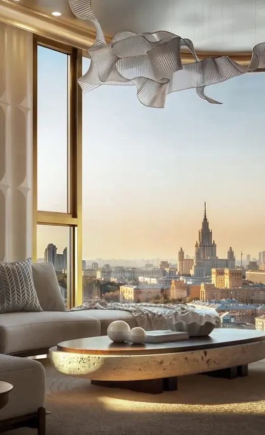

<div class="barnes-template partners-owner-shell" data-barnes-block="directions" data-variant="partners"><div class="page ambassadors-page" data-v-a6e73492="">
<section id="requests" class="base-container" aria-labelledby="barnes-directions-title" data-source-id="requests"><div id="barnes-directions" data-asset-base="assets/directions/" data-source-id="barnes-directions"><div class="bd-window bd-editorial"><div class="bd-section"><p class="bd-eyebrow">НАПРАВЛЕНИЯ BARNES</p><h2 id="barnes-directions-title" data-source-id="barnes-directions-title">С КАКИМИ ЗАПРОСАМИ<br>МЫ РАБОТАЕМ</h2><div class="bd-content">
    <nav class="bd-horizontal" role="tablist" aria-label="Направления BARNES">
      <button type="button" class="bd-navbtn" role="tab" id="direction-tab-city" aria-controls="direction-panel" aria-selected="true" tabindex="0" data-pick="0" data-source-id="direction-tab-city">Покупка в Москве</button><button type="button" class="bd-navbtn" role="tab" id="direction-tab-country" aria-controls="direction-panel" aria-selected="false" tabindex="-1" data-pick="1" data-source-id="direction-tab-country">Покупка в Подмосковье</button><button type="button" class="bd-navbtn" role="tab" id="direction-tab-rent-city" aria-controls="direction-panel" aria-selected="false" tabindex="-1" data-pick="2" data-source-id="direction-tab-rent-city">Аренда в Москве</button><button type="button" class="bd-navbtn" role="tab" id="direction-tab-rent-country" aria-controls="direction-panel" aria-selected="false" tabindex="-1" data-pick="3" data-source-id="direction-tab-rent-country">Аренда в Подмосковье</button><button type="button" class="bd-navbtn" role="tab" id="direction-tab-abroad" aria-controls="direction-panel" aria-selected="false" tabindex="-1" data-pick="4" data-source-id="direction-tab-abroad">Покупка за рубежом</button><button type="button" class="bd-navbtn" role="tab" id="direction-tab-residency" aria-controls="direction-panel" aria-selected="false" tabindex="-1" data-pick="5" data-source-id="direction-tab-residency">ВНЖ и гражданство</button><button type="button" class="bd-navbtn" role="tab" id="direction-tab-commercial" aria-controls="direction-panel" aria-selected="false" tabindex="-1" data-pick="6" data-source-id="direction-tab-commercial">Коммерческая недвижимость</button>
    </nav>
    <select class="bd-mobile-picker" aria-label="Выберите направление">
      <option value="0">Покупка в Москве</option><option value="1">Покупка в Подмосковье</option><option value="2">Аренда в Москве</option><option value="3">Аренда в Подмосковье</option><option value="4">Покупка за рубежом</option><option value="5">ВНЖ и гражданство</option><option value="6">Коммерческая недвижимость</option>
    </select>
    <div id="direction-panel" class="bd-fixed-panel" role="tabpanel" aria-labelledby="direction-tab-city" aria-live="polite" data-source-id="direction-panel"><div class="bd-feature">
      <div class="bd-imagewrap"></div>
      <div class="bd-copy">
        <div class="bd-heading"><h3>Недвижимость в Москве</h3><p class="bd-intro">Новостройки премиум-класса и вторичная недвижимость</p></div>
        <div class="bd-budget"><div class="bd-price-label">Бюджет покупки</div><div class="bd-price "><small>от</small> 52 <small>млн ₽</small></div></div>
        <div class="bd-metrics"><div><div class="bd-label">новостроек премиум-класса и выше</div><div class="bd-num">150+</div></div><div><div class="bd-label">объектов вторичной недвижимости</div><div class="bd-num">2 000+</div></div></div>
        <div class="bd-commission bd-commission-primary"><span class="bd-label">Комиссия BARNES</span><strong>3–5%</strong></div>
        <button type="button" class="bd-cta" data-request="0">Отправить заявку <span aria-hidden="true">↗</span></button>
      </div>
    </div></div></div></div></div></div></section>
</div><script type="application/json" data-block-content>[{"name":"Покупка в Москве","title":"Недвижимость в Москве","intro":"Новостройки премиум-класса и вторичная недвижимость","label":"Бюджет покупки","price":"<small>от</small> 52 <small>млн ₽</small>","metrics":[["150+","новостроек премиум-класса и выше"],["2 000+","объектов вторичной недвижимости"]],"last":["Комиссия","3–5%"],"id":"city","details":[["Типы объектов","Квартиры, пентхаусы, дуплексы и особняки."],["Рынок","Новостройки и вторичная недвижимость Москвы."],["Предложения","В том числе эксклюзивные резиденции от застройщиков."],["Просмотры","Презентации объектов и онлайн- или видеопоказы."]],"image":"../../_assets/partners/89b4a506c07f-city.webp","sourceImage":"media-06.png","imageIsPlaceholder":false},{"name":"Покупка в Подмосковье","title":"Недвижимость в Подмосковье","intro":"Загородные дома и эксклюзивные предложения","label":"Бюджет покупки","price":"<small>от</small> 50 <small>млн ₽</small>","metrics":[["380","объектов"],["30+","эксклюзивных предложений"]],"last":["Комиссия","4–5%"],"id":"country","details":[["Новорижское шоссе","Загородные дома и резиденции."],["Рублёво-Успенское шоссе","Основное направление загородного подбора."],["Ильинское и Минское шоссе","Дополнительные направления поиска."],["Типы объектов","Особняки, малоэтажные резиденции и участки под строительство."]],"image":"../../_assets/partners/c653980372e6-generated-country.webp","imageAlt":"Иллюстрация: современная загородная резиденция среди сосен","imageIsGenerated":true,"sourceImage":"media-20.png","imageIsPlaceholder":false},{"name":"Аренда в Москве","title":"Аренда в Москве","intro":"Городская недвижимость для вашего клиента","label":"Средний чек","price":"250 <small>тыс. ₽/мес.</small>","metrics":[["200+","новостроек премиум-класса и выше"],["15+","эксклюзивных предложений"]],"last":["Комиссия","50–100%"],"id":"rent-city","details":[["Городская аренда","Подбор недвижимости под запрос клиента."],["Предложения","В том числе эксклюзивные объекты."],["Просмотры","Презентации объектов и онлайн- или видеопоказы."],["Сопровождение","Помощь экспертов на этапах сделки."]],"image":"../../_assets/partners/a796cbe8f7a2-generated-rent-city.webp","imageAlt":"Иллюстрация: интерьер премиальной городской квартиры","imageIsGenerated":true,"sourceImage":"media-21.png","imageIsPlaceholder":false},{"name":"Аренда в Подмосковье","title":"Аренда в Подмосковье","intro":"Загородная недвижимость для вашего клиента","label":"Средний чек","price":"<small>от</small> 250 <small>тыс. ₽</small>","metrics":[["200+","объектов в базе"],["15+","эксклюзивных предложений"]],"last":["Комиссия","50–100%"],"id":"rent-country","details":[["Загородная аренда","Подбор недвижимости под запрос клиента."],["Предложения","В том числе эксклюзивные объекты."],["Просмотры","Презентации объектов и онлайн- или видеопоказы."],["Сопровождение","Помощь экспертов на этапах сделки."]],"image":"../../_assets/partners/9e04efd641b5-generated-rent-country.webp","imageAlt":"Иллюстрация: загородный дом с террасой и садом","imageIsGenerated":true,"sourceImage":"media-22.png","imageIsPlaceholder":false},{"name":"Покупка за рубежом","title":"Недвижимость за рубежом","intro":"Международные направления BARNES","label":"Бюджет покупки","price":"<small>от</small> 200 <small>тыс. $</small>","facts":[["Направления","ОАЭ, Турция, Таиланд, Бали, Грузия, Европа"],["Помощь в получении","ВНЖ и гражданства"]],"last":["Комиссия","2–5%"],"id":"abroad","details":[["ОАЭ","Новостройки и коммерция. Помощь с открытием компании и резидентской визой."],["Турция","Новостройки, вторичный рынок, закрытые предложения и сопровождение паспортной программы."],["Таиланд, Бали и Грузия","Новостройки, вторичный рынок и закрытые предложения. Сопровождение программ ВНЖ."],["Европа","Покупка и продажа недвижимости через партнёрскую сеть BARNES."]],"image":"../../_assets/partners/28a716ae1fcc-generated-abroad.webp","imageAlt":"Иллюстрация: резиденция у моря","imageIsGenerated":true,"sourceImage":"media-23.png","imageIsPlaceholder":false},{"name":"ВНЖ и гражданство","title":"ВНЖ и гражданство","intro":"Сопровождение программ с недвижимостью","label":"Программа","price":"Паспорт Турции","words":true,"facts":[["Сопровождение","Под ключ"],["ВНЖ","ОАЭ и другие направления"]],"last":["Формат","С недвижимостью"],"id":"residency","details":[["Турция","Сопровождение покупки по паспортной программе."],["ОАЭ","Помощь с открытием компании и получением резидентской визы."],["Другие направления","Сопровождение программ ВНЖ по условиям выбранной страны."],["Условия","Подходящую программу и условия сопровождения уточняем индивидуально."]],"commissionNote":"Комиссия: условия оговариваются","image":"../../_assets/partners/1ccdac31cdc7-generated-residency.webp","imageAlt":"Иллюстрация: жилая недвижимость с видом на Босфор","imageIsGenerated":true,"sourceImage":"media-24.png","imageIsPlaceholder":false},{"name":"Коммерческая недвижимость","title":"Коммерческая недвижимость","intro":"Покупка недвижимости и готового арендного бизнеса","label":"Объекты","price":"500+","facts":[["Назначение","Склад, офис, торговля"],["Расчётная окупаемость","Менее 7 лет"]],"last":["Инвестиции","ГАБ"],"id":"commercial","details":[["Аренда для бизнеса","Поиск помещений для офиса или торговли."],["Покупка помещений","Подбор складской, торговой и офисной недвижимости."],["Готовый арендный бизнес","Подбор объектов с анализом локации и рыночной окупаемости."],["Консультации","Оценка стоимости продажи и консультации по арендным ставкам."]],"commissionNote":"Комиссия: условия оговариваются","image":"../../_assets/partners/3167212c5885-generated-commercial.webp","imageAlt":"Иллюстрация: лобби современного бизнес-центра","imageIsGenerated":true,"sourceImage":"media-25.png","imageIsPlaceholder":false}]</script></div>
